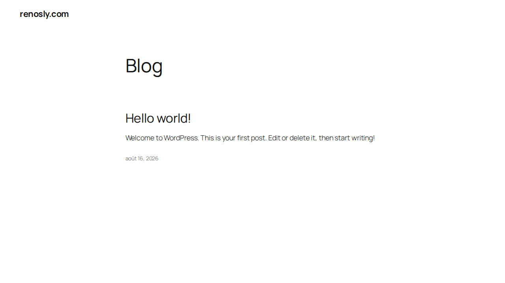
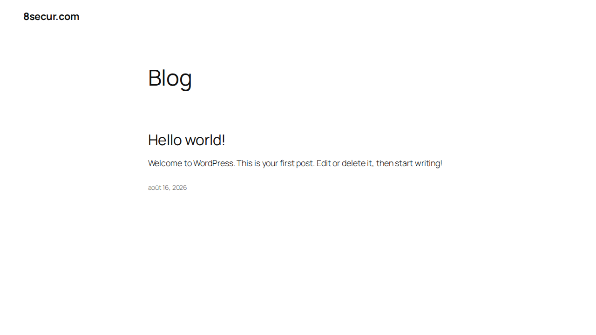

Both domains are now pointed at Hostinger and both are serving a website. One item is
still outstanding: 8secur.com has no SSL certificate, so it only works on
http:// and browsers will warn visitors. Everything else checks out.
FR — Les deux domaines pointent maintenant vers Hostinger et affichent un site.
Il reste un point : 8secur.com n'a pas de certificat SSL, le site ne fonctionne
donc qu'en http:// et les navigateurs afficheront un avertissement. Le reste est correct.
| Check | renosly.com | 8secur.com |
|---|---|---|
| Nameservers point to Hostinger | OK | OK |
| Domain resolves worldwide | OK | OK |
| Website loads | OK | OK (http only) |
| HTTPS / SSL certificate | OK — valid to 14 Nov 2026 | MISSING |
| www redirects to main address | OK | Fails on https |
| Email routing (MX) | OK — Hostinger | OK — Hostinger |
| SPF (anti-spam record) | Present | Present |
| DKIM (mail signing) | Not published | Not published |
| Website content | Default WordPress | Default WordPress |
Right now https://8secur.com does not complete a secure connection — the server
has no certificate for that name, so the connection is refused before the page loads.
Visitors who type the address with https, or who follow a link from Google or
social media, will see a security warning instead of your site.
How to fix it (about two minutes):
https://8secur.com to confirmOnce it is issued, also switch on Force HTTPS on the same screen so visitors are always sent to the secure address.
FR — Il faut installer le certificat SSL de 8secur.com : hPanel → Websites → 8secur.com → Security → SSL → Install SSL. Ensuite activez « Force HTTPS ». Comptez 5 à 15 minutes.
| Stage | What happened |
|---|---|
| Starting point | renosly.com was registered at GoDaddy and sat on GoDaddy's own
nameservers (ns47/ns48.domaincontrol.com), showing the GoDaddy parking page.
No website, no email. |
| Nameserver change | At GoDaddy, the domain was switched to custom nameservers
ns1.dns-parking.com and ns2.dns-parking.com — Hostinger's. |
| Interim fault | For a period after that change the domain resolved to nothing at all: the nameservers had been handed over, but the domain had not yet been added inside the Hostinger account, so Hostinger's servers answered "no such domain". This is the normal consequence of doing the two steps out of order, and it clears as soon as the domain is added on the host side. |
| Domain added | Both renosly.com and 8secur.com were added to Hostinger. Hostinger
moved them onto its CDN nameservers (aurora / nebula.dns-parking.com)
and created full DNS zones — web, mail and SPF records. |
| Current state | Both domains resolve and serve a fresh WordPress installation. renosly.com has a valid SSL certificate; 8secur.com does not yet. |
Every line below was checked against public DNS (Cloudflare 1.1.1.1 and Google
8.8.8.8) and by opening the sites directly, not taken from a control panel screen.
| Test | renosly.com | 8secur.com |
|---|---|---|
| Nameservers (public DNS) | aurora / nebula .dns-parking.com | aurora / nebula .dns-parking.com |
http:// request | 301 → redirects to https | 200 — loads |
https:// request | 200 — loads | Connection fails (TLS alert) |
www over https | 301 → main address | Connection fails |
| Certificate issuer | Let's Encrypt | None presented |
| Certificate covers | renosly.com + www.renosly.com | — |
| Certificate valid | 16 Aug 2026 → 14 Nov 2026 | — |
| Mail servers | mx1 / mx2.hostinger.com | mx1 / mx2.hostinger.com |
One note on checking this yourself. If you test a domain shortly after a DNS change, your phone, your computer or your office router may still be holding the previous answer in memory for up to a few hours. That can make a site look alive when it is not, or dead when it is fine. The reliable test is to open the address on mobile data with wifi switched off, or simply to wait a few hours before drawing a conclusion.
FR — Après un changement DNS, votre téléphone ou votre box peut garder l'ancienne réponse en mémoire pendant quelques heures. Testez en 4G avec le wifi coupé.
Full record exports are in the dns/ folder of this pack, one text file per domain.
Both domains carry the same structure: web records for the domain and www, Hostinger
mail servers, and an SPF record.
Why the IP addresses change between checks. Hostinger serves these domains from a content delivery network, so the same lookup returns different addresses at different moments. That is by design — a different IP on a later check is not a fault.
| Record | Value |
|---|---|
| Nameservers | aurora.dns-parking.com, nebula.dns-parking.com |
| A / AAAA | Hostinger CDN addresses (rotating) |
| www | CNAME → www.renosly.com.cdn.hstgr.net |
| MX | mx1.hostinger.com (5), mx2.hostinger.com (10) |
| SPF | v=spf1 include:_spf.mail.hostinger.com ~all |
| DKIM | Not published |
| Record | Value |
|---|---|
| Nameservers | aurora.dns-parking.com, nebula.dns-parking.com |
| A / AAAA | Hostinger CDN addresses (rotating) |
| www | CNAME → www.8secur.com.cdn.hstgr.net |
| MX | mx1.hostinger.com (5), mx2.hostinger.com (10) |
| SPF | v=spf1 include:_spf.mail.hostinger.com ~all |
| DKIM | Not published |
Both are untouched WordPress installations with the default first post. There is no design or content on either yet — that is the next piece of work, whenever you want to start it.


| File | Contents |
|---|---|
Renosly-8secur-Setup-Documentation.pdf | This document |
dns/renosly.com-dns-records.txt | Full DNS record export, renosly.com |
dns/8secur.com-dns-records.txt | Full DNS record export, 8secur.com |
screenshots/ | Both sites, desktop and mobile |
CHECKLIST.txt | The outstanding items as a short to-do list |